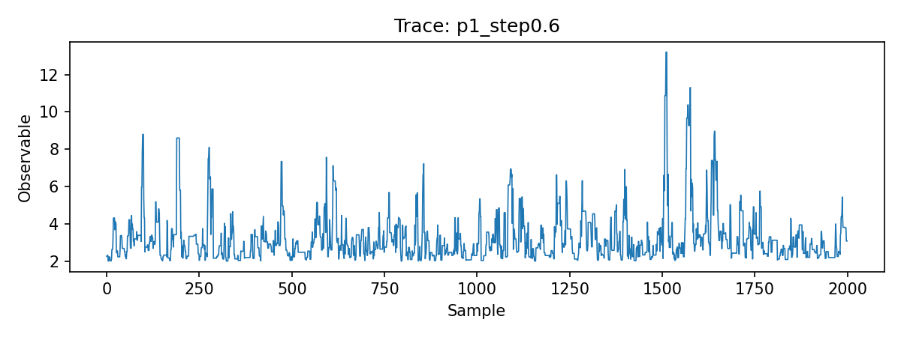
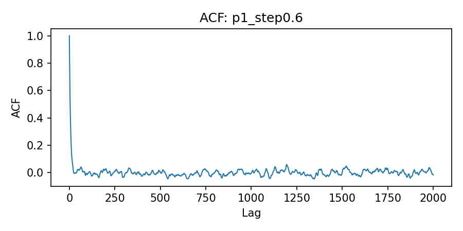
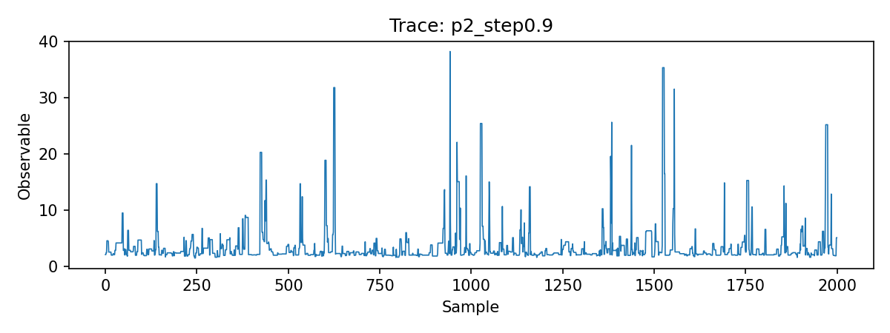
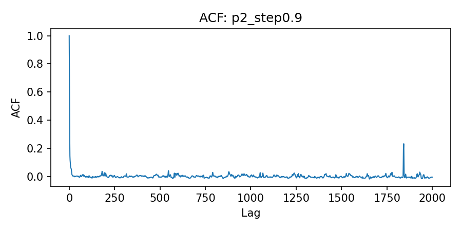

王志超 23343062 2026/5/7 - 实践平台说明 - 实践内容介绍 - 分析思考 - 程序使用方法 - 程序运行结果 - 补充说明 - 源码附录 - C++ Sampler (src/mcmc_integral.cpp) - Python Analysis (analysis/analyze_mcmc.py) - Build Script (Makefile)
本地配置详情： - Release: Debian GNU/Linux 13 (trixie) - Kernel: 6.12.86+deb13-amd64 - CPU: Intel(R) Core(TM) Ultra 5 125H, 18 threads - Memory: 30 GiB RAM, 23 GiB Swap - Python packages: numpy 2.4.4, matplotlib 3.10.9
利用 Metropolis-Hastings (MH) 算法上机编程计算如下二维积分：
I = ∫−22dx∫02 + xdy (2 + x2 + y2)e−x2 − y2 + xy
分别利用如下两个重要性抽样分布的概率密度函数：
q1(x, y) = e−x2 − y2 + xy, q2(x, y) = e−x2 − y2.
其中归一化的概率密度函数为 p1 = q1/Z1 且 p2 = q2/Z2，Z1 和 Z2 分别为积分域上的归一化常数。
1. 编译构建程序：
make2. 逐个运行单条马尔可夫链，例如 p1 分布、游走步长σ = 0.6
./mcmc_integral --density p1 --samples 20000 --burn 5000 --thin 1 --step 0.6 --output data/p1_step0.6.csv3. 数据分析及可视化作图：
python analysis/analyze_mcmc.py data/*.csv --out-dir figures有限区间上的分布函数归一化（采用 200 × 200 网格的辛普森 / Simpson 积分法计算）：
Z1 = 1.76485582, Z2 = 1.49646379
步长测试扫描（每次采样：20,000 个保留样本，5,000 步为老化期 / Burn-in）：
| 密度函数 | 游走步长 (σ) | 接受率 | 积分估计值 | 积分自相关时间 (τint) | 建议抽样间隔 (N0) |
|---|---|---|---|---|---|
| p1 | 0.3 | 0.691 | 5.6577 | 34.417 | 69 |
| p1 | 0.6 | 0.472 | 5.5962 | 12.270 | 25 |
| p1 | 0.9 | 0.321 | 5.6882 | 14.742 | 30 |
| p1 | 1.2 | 0.228 | 5.6429 | 11.622 | 24 |
| p2 | 0.3 | 0.672 | 5.6553 | 19.235 | 39 |
| p2 | 0.6 | 0.434 | 5.5004 | 7.885 | 16 |
| p2 | 0.9 | 0.288 | 5.7362 | 5.589 | 12 |
| p2 | 1.2 | 0.201 | 5.5333 | 11.107 | 23 |
各密度函数的最佳配置与分析： - 对于 p1：推荐游走步长为 σ ≈ 0.6，此时具备合理的接受率（47.2%），且对应的自相关时间 τint ≈ 12.27 较小，样本能较快趋于独立。根据 N0 ≥ 2τint 的经验公式，建议的间隔取点应设为 N0 = 25。 - 对于 p2：推荐游走步长为 σ ≈ 0.9，在扫描测试中表现出最小的自相关时间（τint ≈ 5.59）。依同理，对于该密度函数此时的建议抽样间隔为 N0 = 12。
由此，可以通过每隔 N0 步提取一次样本以获取趋近于独立同分布 (i.i.d) 的有效采样。
部分自相关函数 (ACF) 与抽样序列 (Trace) 的可视化结果展示如下。
基于密度 p1 (游走步长 σ = 0.6)： 在使用 σ = 0.6 的高斯游走步长时，Trace 图显示马尔可夫链能够很好地探索样本空间，没有出现长时间的滞留现象；同时 ACF 图表明自相关函数在间隔 20 步左右便快速衰减至 0 附近，说明样本间的相关性较低，采样效率良好。


基于密度 p2 (游走步长 σ = 0.9)： 对于密度 p2，步长 σ = 0.9 表现出最优的自相关时间（τint ≈ 5.6）。从 Trace 图可以看出序列在均值附近高频振荡且混合充分；对应的 ACF 图极快地衰减到接近 0 的水平，代表了非常理想的独立同分布 (i.i.d) 近似。


根据重要性采样 (Importance Sampling) 的基本原理，对于待求积分 I = ∫f(x, y)dxdy，当我们引入符合某种已知分布的概率密度函数 p(x, y) 时，积分类式的期望值可等价改写为：
$$ I = \int \frac{f(x,y)}{p(x,y)} p(x,y) dx dy = \mathbb{E}_{p}\left[ \frac{f(x,y)}{p(x,y)} \right] $$
通过马尔可夫链蒙特卡洛 (MCMC) 方法从 p(x, y) 中抽取一系列样本点 (xi, yi) 时，积分值即可通过下式进行蒙特卡洛估计：
$$ I \approx \frac{1}{N} \sum_{i=1}^N \frac{f(x_i, y_i)}{p(x_i, y_i)} $$
而在本题情图下，被积函数的核心部分 f(x, y) = (2 + x2 + y2)e−x2 − y2 + xy。
1. 基于密度 p1 的抽样估算： 已知概率密度函数 $p_1(x,y) = \frac{1}{Z_1} e^{-x^2 - y^2 + xy}$。代入上述原理公式中，每次采样的有效观测量 O1(x, y) 为：
$$ \frac{f(x,y)}{p_1(x,y)} = \frac{(2 + x^2 + y^2) e^{-x^2 - y^2 + xy}}{\frac{1}{Z_1} e^{-x^2 - y^2 + xy}} = Z_1 (2 + x^2 + y^2) $$
因此最终的估计等式提炼为：I = Z1⟨2 + x2 + y2⟩p1。
2. 基于密度 p2 的抽样估算： 同理，针对密度函数 $p_2(x,y) = \frac{1}{Z_2} e^{-x^2 - y^2}$ 进行变换，对应的有效观测量 O2(x, y) 为：
$$ \frac{f(x,y)}{p_2(x,y)} = \frac{(2 + x^2 + y^2) e^{-x^2 - y^2 + xy}}{\frac{1}{Z_2} e^{-x^2 - y^2}} = Z_2 (2 + x^2 + y^2) e^{xy} $$
所以得到最终估计等式为：I = Z2⟨(2 + x2 + y2)exy⟩p2。
#include <cmath>
#include <cstdint>
#include <fstream>
#include <iomanip>
#include <iostream>
#include <random>
#include <sstream>
#include <string>
#include <vector>
struct Options {
std::string density = "p1";
int64_t samples = 20000;
int64_t burn_in = 5000;
int64_t thin = 1;
double step = 0.6;
uint64_t seed = 12345;
int grid_nx = 200;
int grid_ny = 200;
std::string output = "";
};
bool in_domain(double x, double y) {
if (x < -2.0 || x > 2.0) {
return false;
}
if (y < 0.0) {
return false;
}
double ymax = 2.0 + x;
return y <= ymax;
}
double log_q1(double x, double y) {
return -(x * x) - (y * y) + x * y;
}
double log_q2(double x, double y) {
return -(x * x) - (y * y);
}
double simpson_1d(const std::vector<double> &values, double h) {
if (values.size() < 2) {
return 0.0;
}
double sum = values.front() + values.back();
for (size_t i = 1; i + 1 < values.size(); ++i) {
sum += (i % 2 == 0) ? 2.0 * values[i] : 4.0 * values[i];
}
return sum * h / 3.0;
}
double integrate_2d_simpson(int nx, int ny, const std::string &density) {
if (nx % 2 == 1) {
nx += 1;
}
if (ny % 2 == 1) {
ny += 1;
}
double x_min = -2.0;
double x_max = 2.0;
double hx = (x_max - x_min) / nx;
std::vector<double> x_values(nx + 1);
for (int i = 0; i <= nx; ++i) {
x_values[i] = x_min + i * hx;
}
std::vector<double> fx(nx + 1, 0.0);
for (int i = 0; i <= nx; ++i) {
double x = x_values[i];
double y_min = 0.0;
double y_max = 2.0 + x;
if (y_max <= y_min) {
fx[i] = 0.0;
continue;
}
double hy = (y_max - y_min) / ny;
std::vector<double> y_vals(ny + 1, 0.0);
for (int j = 0; j <= ny; ++j) {
double y = y_min + j * hy;
double val = 0.0;
if (density == "p1") {
val = std::exp(log_q1(x, y));
} else {
val = std::exp(log_q2(x, y));
}
y_vals[j] = val;
}
fx[i] = simpson_1d(y_vals, hy);
}
return simpson_1d(fx, hx);
}
Options parse_args(int argc, char **argv) {
Options opts;
for (int i = 1; i < argc; ++i) {
std::string arg = argv[i];
auto next = [&](double &target) {
if (i + 1 < argc) {
target = std::stod(argv[++i]);
}
};
auto next_int = [&](int64_t &target) {
if (i + 1 < argc) {
target = std::stoll(argv[++i]);
}
};
auto next_uint = [&](uint64_t &target) {
if (i + 1 < argc) {
target = static_cast<uint64_t>(std::stoull(argv[++i]));
}
};
auto next_str = [&](std::string &target) {
if (i + 1 < argc) {
target = argv[++i];
}
};
if (arg == "--density") {
next_str(opts.density);
} else if (arg == "--samples") {
next_int(opts.samples);
} else if (arg == "--burn") {
next_int(opts.burn_in);
} else if (arg == "--thin") {
next_int(opts.thin);
} else if (arg == "--step") {
next(opts.step);
} else if (arg == "--seed") {
next_uint(opts.seed);
} else if (arg == "--grid-nx") {
int64_t tmp = opts.grid_nx;
next_int(tmp);
opts.grid_nx = static_cast<int>(tmp);
} else if (arg == "--grid-ny") {
int64_t tmp = opts.grid_ny;
next_int(tmp);
opts.grid_ny = static_cast<int>(tmp);
} else if (arg == "--output") {
next_str(opts.output);
}
}
return opts;
}
int main(int argc, char **argv) {
Options opts = parse_args(argc, argv);
if (opts.density != "p1" && opts.density != "p2") {
std::cerr << "Unknown density: " << opts.density << "\n";
return 1;
}
if (opts.samples <= 0 || opts.burn_in < 0 || opts.thin <= 0) {
std::cerr << "Invalid sampling parameters.\n";
return 1;
}
double z_norm = integrate_2d_simpson(opts.grid_nx, opts.grid_ny, opts.density);
std::mt19937_64 rng(opts.seed);
std::normal_distribution<double> normal(0.0, 1.0);
std::uniform_real_distribution<double> uniform(0.0, 1.0);
double x = 0.0;
double y = 1.0;
if (!in_domain(x, y)) {
x = 0.0;
y = 0.0;
}
auto log_q = [&](double x_val, double y_val) {
return (opts.density == "p1") ? log_q1(x_val, y_val) : log_q2(x_val, y_val);
};
int64_t total_steps = opts.burn_in + opts.samples * opts.thin;
int64_t accepted = 0;
int64_t kept = 0;
std::ofstream out;
if (!opts.output.empty()) {
out.open(opts.output);
out << "idx,x,y,observable\n";
}
double mean = 0.0;
double m2 = 0.0;
for (int64_t step_idx = 0; step_idx < total_steps; ++step_idx) {
double x_prop = x + opts.step * normal(rng);
double y_prop = y + opts.step * normal(rng);
bool accept = false;
if (in_domain(x_prop, y_prop)) {
double log_alpha = log_q(x_prop, y_prop) - log_q(x, y);
if (std::log(uniform(rng)) < log_alpha) {
accept = true;
}
}
if (accept) {
x = x_prop;
y = y_prop;
accepted++;
}
if (step_idx >= opts.burn_in && ((step_idx - opts.burn_in) % opts.thin == 0)) {
double h = 2.0 + x * x + y * y;
double observable = h;
if (opts.density == "p2") {
observable = h * std::exp(x * y);
}
kept++;
double delta = observable - mean;
mean += delta / kept;
m2 += delta * (observable - mean);
if (out.is_open()) {
out << kept << "," << std::setprecision(10) << x << "," << y << "," << observable << "\n";
}
}
}
double variance = (kept > 1) ? (m2 / (kept - 1)) : 0.0;
double stddev = std::sqrt(variance);
double estimate = z_norm * mean;
double stderr = (kept > 0) ? z_norm * stddev / std::sqrt(static_cast<double>(kept)) : 0.0;
std::cout << std::fixed << std::setprecision(8);
std::cout << "Density: " << opts.density << "\n";
std::cout << "Z_norm: " << z_norm << "\n";
std::cout << "Samples kept: " << kept << "\n";
std::cout << "Acceptance rate: " << static_cast<double>(accepted) / total_steps << "\n";
std::cout << "Mean observable: " << mean << "\n";
std::cout << "Integral estimate: " << estimate << " +/- " << stderr << "\n";
return 0;
}import argparse
import csv
import math
import os
from typing import List, Tuple
import matplotlib.pyplot as plt
import numpy as np
def load_observable(path: str) -> np.ndarray:
values = []
with open(path, "r", newline="") as handle:
reader = csv.DictReader(handle)
for row in reader:
values.append(float(row["observable"]))
return np.asarray(values, dtype=float)
def autocorrelation(x: np.ndarray, max_lag: int) -> np.ndarray:
x = x - np.mean(x)
n = len(x)
if n == 0:
return np.zeros(1)
var = np.var(x)
if var == 0:
return np.zeros(max_lag + 1)
acf = np.zeros(max_lag + 1)
acf[0] = 1.0
for lag in range(1, max_lag + 1):
acf[lag] = np.dot(x[:-lag], x[lag:]) / ((n - lag) * var)
return acf
def integrated_autocorr_time(acf: np.ndarray) -> float:
if len(acf) <= 1:
return 1.0
tau = 1.0
for lag in range(1, len(acf)):
if acf[lag] <= 0.0:
break
tau += 2.0 * acf[lag]
return tau
def analyze_file(path: str, max_lag: int, out_dir: str) -> Tuple[float, int]:
series = load_observable(path)
if len(series) == 0:
return 1.0, 1
max_lag = min(max_lag, len(series) - 1)
acf = autocorrelation(series, max_lag)
tau = integrated_autocorr_time(acf)
thin = max(1, int(math.ceil(2.0 * tau)))
base = os.path.splitext(os.path.basename(path))[0]
plt.figure(figsize=(8, 3))
plt.plot(series[: min(2000, len(series))], lw=0.8)
plt.title(f"Trace: {base}")
plt.xlabel("Sample")
plt.ylabel("Observable")
plt.tight_layout()
plt.savefig(os.path.join(out_dir, f"trace_{base}.png"), dpi=150)
plt.close()
plt.figure(figsize=(6, 3))
plt.plot(acf, lw=1.0)
plt.title(f"ACF: {base}")
plt.xlabel("Lag")
plt.ylabel("ACF")
plt.tight_layout()
plt.savefig(os.path.join(out_dir, f"acf_{base}.png"), dpi=150)
plt.close()
return tau, thin
def main() -> None:
parser = argparse.ArgumentParser()
parser.add_argument("inputs", nargs="+", help="CSV files from the sampler")
parser.add_argument("--max-lag", type=int, default=2000)
parser.add_argument("--out-dir", default="figures")
args = parser.parse_args()
os.makedirs(args.out_dir, exist_ok=True)
rows: List[Tuple[str, float, int]] = []
for path in args.inputs:
tau, thin = analyze_file(path, args.max_lag, args.out_dir)
rows.append((path, tau, thin))
print("file,tau_int,thin")
for path, tau, thin in rows:
print(f"{path},{tau:.3f},{thin}")
if __name__ == "__main__":
main()CXX = g++
CXXFLAGS = -O2 -std=c++17 -Wall -Wextra -pedantic
BIN = mcmc_integral
SRC = src/mcmc_integral.cpp
all: $(BIN)
$(BIN): $(SRC)
$(CXX) $(CXXFLAGS) -o $(BIN) $(SRC)
clean:
rm -f $(BIN)